Bonjour.
Voici Jeff. Jeff, c'est vous.
Bonjour, Jeff ! Vous allez bien ?
HMMMMMMM.
Ok Jeff, vous aimez les poulpes ?
Vous décidez de terrasser le dragon !!
Pris d'une passion soudaine, vous vous dirigez vers des passants pour les interroger.
Vous vous dirigez vers cette dame.
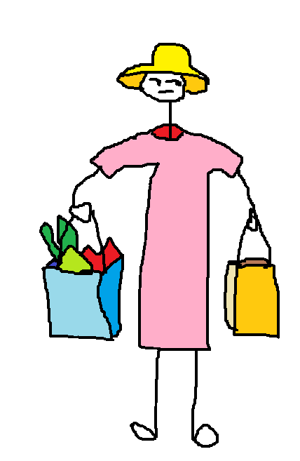Vous vous attristez suite à la réponse de la madame. Elle a l'air de dire qu'il n'y a pas de dragon ici. Que décidez-vous de faire ?
Vous prenez 2 minutes de votre vie pour vous faire un café.
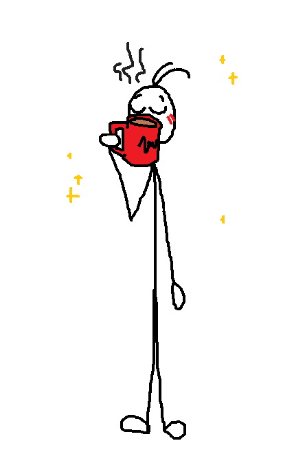AAAAAAH.
Vous repensez, sensiblement, au temps qui passe, puis à la Vie, l'Univers et Tout le reste.
Qu'étiez-vous en train de faire, déjà ?
Vous vous dirigez vers l'Est.
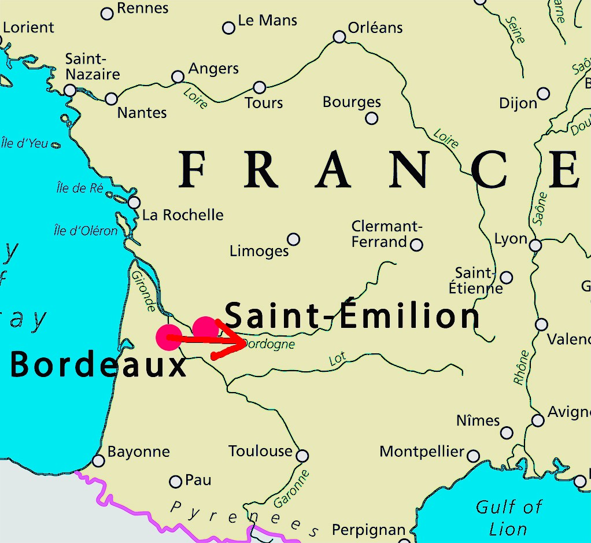AAAAAAH.
Bordeaux. La belle endormie.
Vous repensez, sensiblement, au temps qui passe, puis à l'amour de votre vie, et enfin à la détérioration de l'image à cause de la compression due à l'encodage H.264 qui est, en soit, préférable au H.265 en robotique, enfin seulement en analyse classique, même aujourd'hui avec des réseaux de neurones, parce que dans la mesure où on se place dans des conditions répétables, que ce soit avec un réseau ou non on aura toujours de meilleurs résultats.
Qu'étiez-vous en train de faire, déjà ?
Ah, oui, vous êtes désormais à l'Est.
Oh, c'est dommage 😠 ! Parce que moi non ! C'est gluant, comme les huîtres !
Alors, vous voulez quand-même continuer ou pas ?
Attention, il n'y aura peut-être pas de poulpes dans cette histoire !!
Vite, fuyez la ville ! Sinon, vous ne ferez pas long feu.
"Ok Bret, merci pour l'info !!
- Pas de quoi..."
D'un pas pressé, vous vous dirigez vers votre demeure. Comment font tous ces gens pour faire leur marché en toute innocence ?
Ils doivent bien être au courant que la ville a été attaquée ! C'est sûrement partout dans les news...
Tout en transpirant sous le soleil, vous mettez en marche vos petits neurones. Bret vous a parlé d'un dragon, mais...
Vous faites vraiment confiance à Bret ?
Ne soupçonneriez-vous pas que Bret vous ait raconté des salades ?
Pris d'un élan de fougue, vous vous dirigez dans la direction indiquée, en prenant votre courage à deux mains. Plus vous vous rapprochez, et plus vous entendez du bruit...
Vous êtes fort en programmation ?
Hmmmm
Ok, aujourd'hui c'est .
Évidemment, comme tous les jours, vous, vous n'avez rien à faire.
Alors, pour tuer le temps, vous faites un tour au marché.
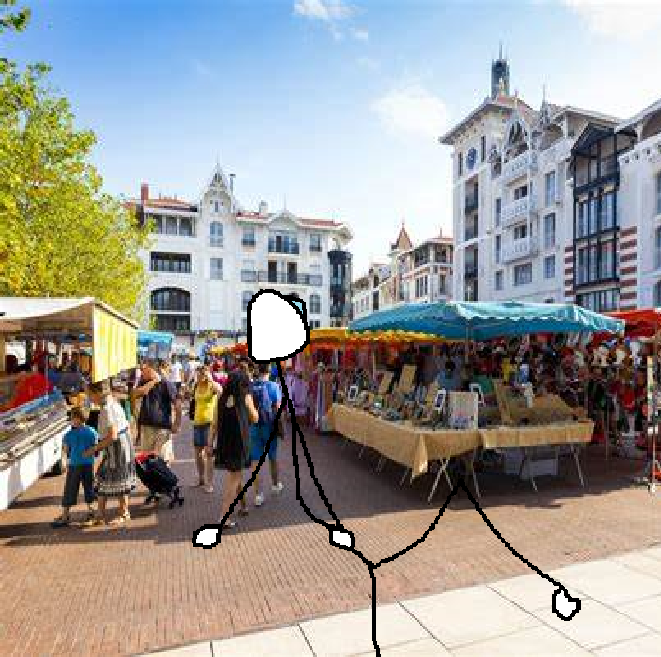Tu-tu-tu...
Vous repensez à hier soir. C'était quand-même une soirée sacrément arrosée ! Mélanger le cidre et le pastis était, au final, une bonne idée.
Nostalgique, vous vous arrêtez devant une échoppe de limonades.
Bref, vous continuez tranquillement votre chemin...
Sous le soleil...
Quand soudain, vous croisez Bret, votre collègue de travail !!
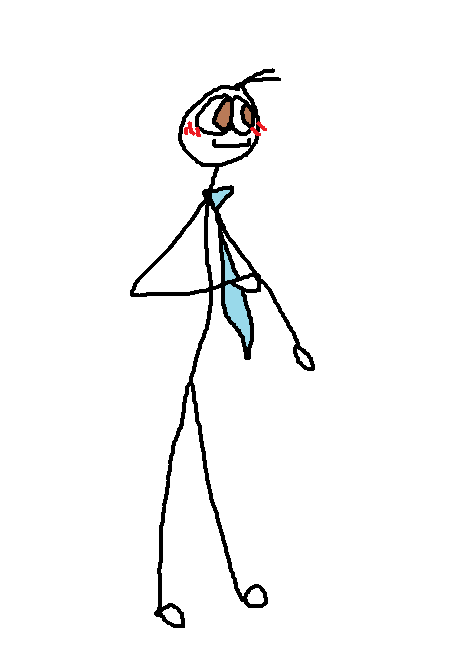Sacrebleu, il a toujours sa vieille cravate bleue.
Il l'avait hier soir, aussi.
Il ne s'est pas changé entre temps ?
"Eh, Bret ! Qu'est-ce que tu fais là ?
- C'est plutôt à moi de te demander ça, Jeff. Pourquoi t'es au marché à cette heure là ?
- Ah ouai."
Vous le regardez.
Il vous regarde.
"Et du coup, toi, tu fais quoi par là ?
- Oh, moiii ! Moi, je me rends chez mon assurance.
- Ah bon ? Pourquoi ça ?
- Eh bien, hier soir, alors que nous étions en train de savourer notre petit cidre au pastis chez Gilberta, un dragon a terrassé une partie de la ville... Ma maison s'est faite amochée. Je vais voir ce que je peux faire avec mon assureur."
Vous devenez tout pâle.
QUE DIS-JE, TOUT PÂLE ! Vous êtes déjà transparent, vous êtes un bonhomme bâton...
Revenons-en à la situation actuelle. Un dragon a quand-même détruit une partie de la ville !
Que décidez-vous de faire ?
Vous commencez à faire vos valises, hâtivement.
C'est pas possible, ça ! Comment peut-on rester les bras croisés alors qu'une terreur si grande menace la ville ?
Franchement...
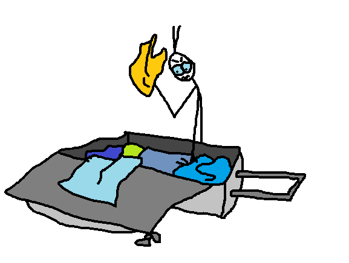Désormais, rien ne peut plus vous arrêter. En quête d'une proie quelconque à abattre, vous interrogez les passants.
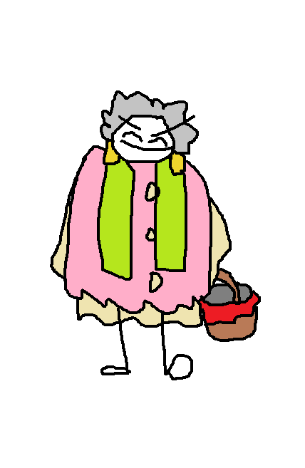Vous tombez sur cette gente dame.
"Bonjour Madame !
- Mademoiselle.
- Ah euh, Mademoiselle, désolé.
- Mouaih."
"Vous avez pas vu un dragon ou un poulpe géant, par hasard ?
- Ah si, le gros machin qui détruit la ville, là ?
- Ouai, exactement !
- Il est derrière les maisons, là-bas. Tenez jeune homme, prenez cette épée ! Elle vous servira à la conquête !"
Vous saisissez l'Épée Magique.
Vous interrogez une seconde personne, déterminé !
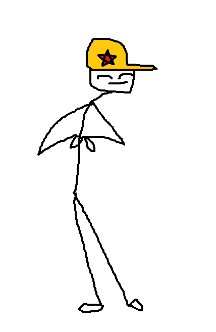Ça a l'air d'être un type sympa. Vous décidez d'aborder les thèmes suivants...
Que décidez-vous de faire ?
Ouai. Bret est sympa, mais il est un peu con.
Suspicieux, vous scrollez parmi les images de votre téléphone.
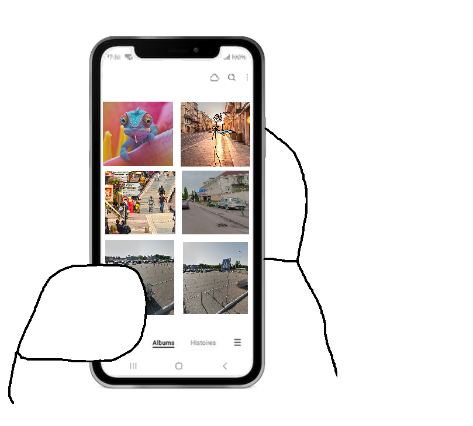Vous possédez un certain pactole de photos compromettantes de Bret...
Là, c'est là fois où il se prenait pour Rimbaud à Paris. Il disait à tous les passants qu'il était super connu.
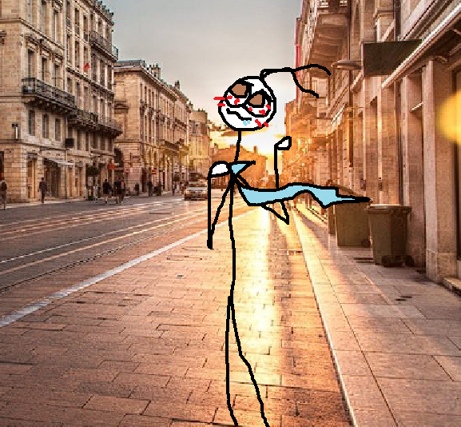Ici, c'est la fois où vous attendiez un avion à l'aéroport. Vous deviez aller en Chine pour le travail, et Bret s'amusait avec les panneaux sur le parking...
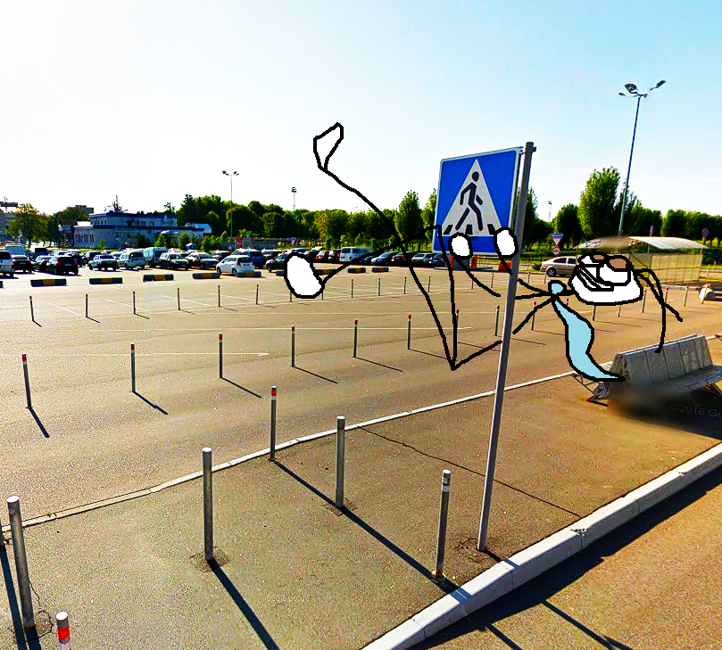Ah, là c'est quand vous êtes allés voir DJ Snake à l'Arena avec Bret.
Il n'a pas arrêté de vous crier dans les oreilles.
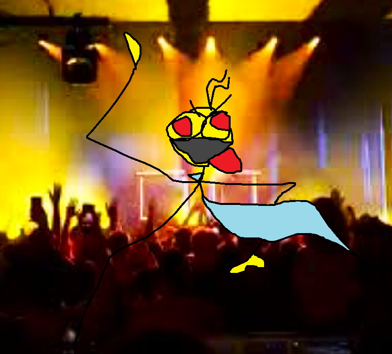Là, c'est la fois où Bret avait invité toute l'équipe chez lui pour fêter sa promotion.
Il avait un peu trop bu, comme d'habitude.
Le patron l'a dépromu le lendemain...
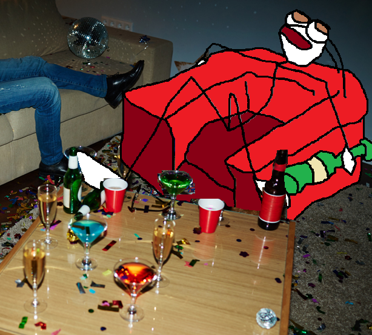Vous soupirez. Est-ce que vous voulez appeler Bret pour lui demander de clarifier la situation ?
Ou peut-être que vous préfereriez juste chercher l'info par vous-même sur Internet...
Vous décidez d’arrêter l'aventure ici. Une décision fatale !
Vous courrez dans les ruelles, et soudainement... !
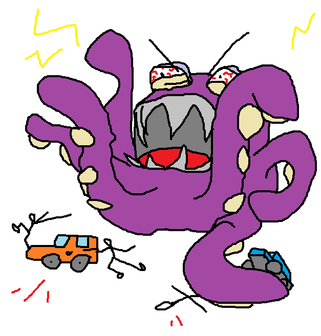OH NON ! LE POULPE GÉANT !
Vous prenez votre courage à deux mains, et foncez dans le tas.
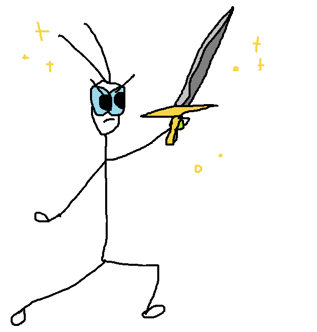YAAAAA !
Et puis, le poulpe vous tape la discut.
"Yoooo, man, sacrée épée que t'as là !
- Euh, yo... Merci...
- Tu sais, je détruis la ville parce que je m'ennuie un peu...
- Ah...
- Tu veux qu'on soit potes ?"
Après une dizaine de minutes, vous arrivez enfin chez vous. Ouf ! Vous pouvez enfin souffler un peu.
Il ne vous reste qu'à faire vos valises et monter en voiture.
Vous voulez un café ?
Moi non plus.
Attention cependant. Peut-être que vous croiserez un poulpe par mégarde aujourd'hui. Oh non... 🫣
Vous décidez de vous renseigner sur ce fameux "dragon" qui a tout ravagé.
Peut-être que ce sont bien des salades...
Sur MSN, les résultats sont assez étranges. On dirait que ça parle... De poulpe ?
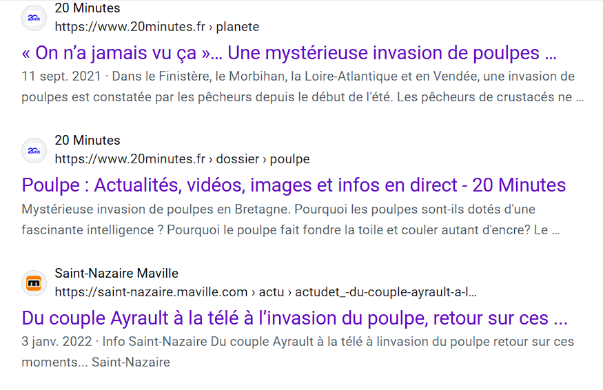Que pensez-vous de ces annonces ?
Vous continuez vos recherches. Quand soudain, vous tombez sur un live en direct à la télé sur France2. Oh !
Vous plissez des yeux.
Effectivement, il semblerait bien... Qu'un poulpe géant saccage la ville !
Bret vous a donc bel et bien dit n'importe quoi, mais c'est tout aussi grave !